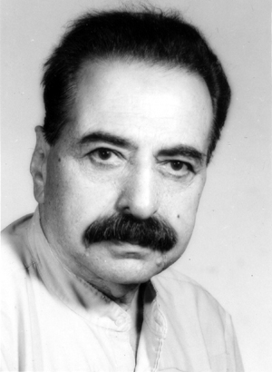

The Worst Prison Term
In 1983 the Islamic Government imprisoned many opponents, including the National Front activists. Asghar Parsa was arrested and held under very severe conditions for more than three years. Here is a picture taken few days after his release in 1985.